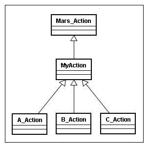

戻る
最終更新日: 2008 年 3 月 11 日
このドキュメントは情報が整備されておらず、情報が古い可能性があります。ドキュメントは新しく書き換える予定です。
Hacks
いくつかのアクションで共通した前処理を実行したい場合、どのようにコードを実装すれば良いでしょうか。一つには パッケージフィルタ を使って処理をフィルタリングする方法がありますが、ここで共通ロジックを通す親アクションクラスを作成し、その中で前処理を実行する方法を紹介します。

上記クラス図に例を示していますが、親アクションを作成する方式の場合、A〜C のアクションは独自に作成した MyAction クラスを継承する必要があります。フィルタと異なり既存のアクションに手を付け加える形になりますが、代わりに次のようなメリットがあります。
- Delta_Action クラスが持つメソッドをオーバーライドして、アクションの共通前処理を実装できる
- Delta_Action#validate() メソッドによるビジネスロジックの検証、エラーハンドリングの共通化
- 抽象メソッドを作成し、子クラスでメソッドの実装を強制することが可能
それでは具体的なサンプルコードを見ていきましょう。初めに親となる MyAction クラスを作成します。MyAction クラスは、全てのアクションのベースとなる Delta_Action を継承します。
- PHP Code# libs/wrapper/MyAction.php
class MyAction extends Delta_Action {
// MyAction を継承した全てのアクションで初めに実行したい処理を定義
public function initialize()
{
parent::initialize();
$generateId = IDGenerator::create();
$this->getRequest()->setAttribute('generateId', $generateId);
}
}
initialize() メソッドを子クラスで継承する場合は、必ず親メソッド parent::initialize() を宣言して下さい。 親メソッドが呼びだされない場合は、予期しない動作が発生する可能性があります。
次に MyAction を継承した子クラス A〜C を作成します。 子アクションは全て MyAction を継承するよう実装しています。
- PHP Code# modules/{module}/actions/A_Action.php
class A_Action extends MyAction
{
public function execute()
{
// 親クラスの initialize() で設定した値を取得する
$generateId = $this->getRequest()->getAttribute('generateId');
return Delta_View::NONE;
}
}
子クラスは initialize() メソッドが呼びだされた後に実行されるため、MyAction#initialize() でセットした値をリクエストから取得することが出来ます。